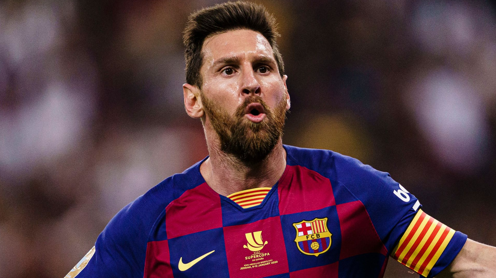

|  |
|---|
|
Lionel Andrés Messi Cuccittini 1987. június 24-én született az argentínai Rosarióban, Jorge Horacio Messi és Celia María Cuccittini gyermekeként. Apai ágon ősei az olaszországi Anconából származnak, ahonnan őse, Angelo Messi 1883-ban emigrált Argentínába. Két bátyja és egy húga van, Rodrigo, Matías, illetve María Sol. Ötévesen kezdett el futballozni egy helyi, Grandoli nevű csapatban, ahol apja volt az edző. 1995-ben Messi a szintén rosariói Newell’s Old Boyshoz igazolt. 11 éves korában növekedésihormon-hiányt diagnosztizáltak nála. Az argentin első osztályú River Plate érdeklődött iránta, de nem volt arra kapacitása, hogy finanszírozza a fiú gyógykezeltetésének havi 900 dolláros költségét. Ekkor szerzett Messiről tudomást Carles Rexach, a Barcelona akkori sportigazgatója, aki felajánlotta, hogy a spanyol klub fizeti a kezeléseket, amennyiben az argentin Európába szerződik. Messi a családjával együtt Európába költözött, és a Barcelona korosztályos csapataiban kezdett játszani. Két unokatestvére, Maxi és Emanuel Biancucchi is labdarúgó. Lionel Andrés Messi Cuccittini (Rosario, 1987. június 24. –) argentin válogatott labdarúgó, a Paris Saint-Germain játékosa. Messi generációjának egyik kiemelkedő játékosa, aki fiatalon lehetett az Aranylabda- és FIFA az év játékosa szavazás jelöltje, 22 éves korára pedig mindkét díjat elnyerte. Rendelkezik spanyol állampolgársággal, ezért európai játékosnak is számít. A legtöbben a világ legjobbjának tartják az utóbbi időben jobbszélsőcsatárként játszó labdarúgót. 2009 és 2019 között hatszor is megkapta az Aranylabdát (2010-től 2016-ig FIFA Aranylabda), amellyel ő lett az első hatszoros győztes. Ezzel ő és Cristiano Ronaldo azok a játékosok, akik valaha háromnál többször vihették el a díjat. Hat elsősége vitathatatlanul a valaha volt legnagyobbak közé emeli. Játékstílusa és képességei alapján sokszor hasonlítják Diego Maradonához, a legendás argentin játékoshoz, aki maga is utódjának nevezte. Fiatalon kezdett futballozni, a benne rejlő lehetőséget pedig korán felismerte az FC Barcelona. 2000-ben hagyta el szülővárosa csapatát, a Newell’s Old Boyst, és Európába költözött családjával, miután a Barcelona felajánlotta, hogy finanszírozza növekedésihormon-hiányának kezelését. 2004–05-ös bemutatkozó szezonjában ő lett a spanyol bajnokság történetének legfiatalabb játékosa és gólszerzője. Ebben a szezonban spanyol bajnok, egy évvel később bajnok és Bajnokok ligája-győztes lett. A 2006–07-es szezon jelentette számára a nagy áttörést: állandó kezdő lett Barcelonában, mesterhármast szerzett a Real Madrid ellen, és 14 góllal végzett a bajnokságban. Eddigi legsikeresebb szezonja a 2008–09-es volt, amelyben 38 góljával fontos szerepet játszott a Barcelona triplázásában. A 2009–10-es évadban szerzett 47 góljával ő is beállította az addig Ronaldo által tartott FC Barcelona klubrekordot. Hat góllal gólkirályi címet nyert a 2005-ös ifjúsági labdarúgó-világbajnokságon, ahol két döntőbeli góljával segítette Argentínát világbajnoki címhez. Röviddel ezután állandó tagja lett a felnőtt válogatottnak. 2006-ban minden idők legfiatalabb argentin világbajnoki résztvevője lett, majd 2007-ben ezüstérmet szerzett a Copa Americán. 2008-ban Pekingben olimpiai aranyérmet nyert, 2021-ben megnyerte Copa Américát. Utóbbi az első trófea, melyet az argentin válogatottal nyert. Messi az első játékos, aki a BL 1992 óta íródó történetében egy mérkőzésen öt gólt szerzett. Ezt a 2012. március 7-i Barcelona–Bayer Leverkusen mérkőzésen érte el. |